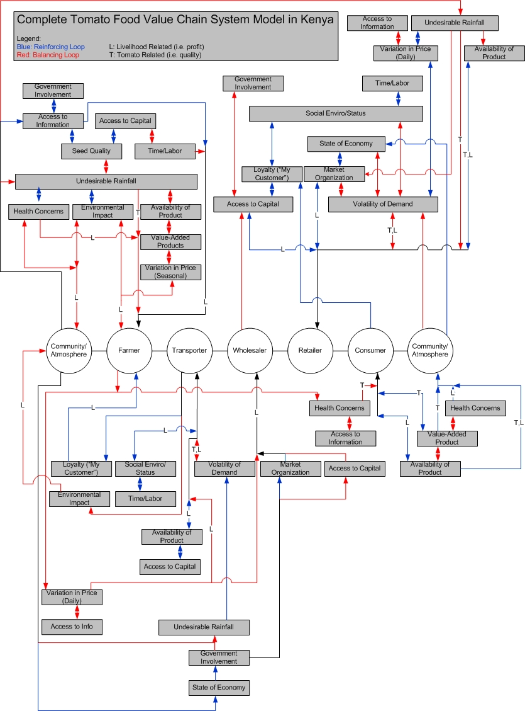

Variables (Click to Clear): |  |
STEEP: Political
Related Stressors: Access to Information, State of Economy, Market Organization
Description: While there is little regulation of regional tomato transport, the government still plays a significant role in impacting the value chain. For the farmers, the government helps by providing educational materials, training, co-operative extension officers, and subsidized agricultural supplies. This involvement varies across counties and may be based on regional income and government appropriations. Typically in Kenya, the party in power has directed a greater qantity of funds to it's regions of support. For transporters, government most directly impacts their work based on the quality of the road conditions that are maintained across the country. For wholesalers and retailers, the local government taes entrance into the market as well as a daily fee for selling. The daily fee varies from 10-50 KSH and is based on several factors including the sophistication of the structure of the market (if there is a roof, if it is gated, etc.), space allocated for each retailer, and day of the week (certain days are designated 'market days' and have increased taxes). The wholesale crate tax is typically 50-100 KSH per crate entered into the market
Related Stressors: Seed Quality, Access to Capital, Variation in Price (Daily)
Description: Whether it be tomato varieties, disease identification, or farmig techniques (furrows and intercropping), farmers learn mostly through generational means, the Ministry of Agcirulture, and organized farming groups. In some areas, the Ministry of Agriculture acts as a proactive and helpful resource for starting and managing farms, as well as establishing organized groups. They can collect rainfall data and frequently subsidize fertilizers. They also frequently provide information about market prices and supply. This was especially prevalent in the area around Nyeri town, be it with greenhouse or open-air farmers. In other areas, those that are less well off and have more generational entrenchment in tomato growing (Kutus), the Ministry of Agriculture is less prevalent. In these areas, other farmers, seed companies, and the Wambugu Farm field Day are still sources of education with new varieties and techniques. Transporters and retailers rely on information about market prices to distribute goods, bargain, and prepare for future demand. The availability and accuracy of this information can impact how many tomatoes are wasted due to time, the ability of a seller to identify ideal markets, and even the timeliness of transporters in reaching markets.
STEEP: Technical, Economic, Political
Related Stressors: Loyalty, Access to Inforomation, Time/Labor
Description: Most steps in the value chain involve some sort of upfront costs that can occur long before returns are seen. For the farmer, the costs are greatest, where farmers can only practically enter the business if they have inherited land and are in an area where the Ministry of Agriculture is active and willing to help.Unfortunately, the upfront costs take place months before farmers see returns. Transporters have some upfront physical costs in terms of buying goods from farmers, then seeing their returns over the next few days, but their upfront costs are much more social in nature. They must gather connections in different markets and amongst different brokers in the farming areas. As these connections build, they are able to better gauge how much to purchase crates for, which markets to go to, and how to time their purchasing and selling each day. Retailers have the upfront cost of purchasing an entire crate of tomatoes. This can be very difficult for some, as they are typically the stakeholder with the least capital. It is important for them to build relationships with suppliers, as in many cases, the supplier will allow for payment after the retailer has had the chance to make a profit.
STEEP: Social, Technical, Economic, Environmental, Political
Related Stressors: Access to Information
Description: Different seeds have different yields and shelf lives, and farmers learn about how good seeds are from word of mouth and programs put on by seed companies in cooperation with the government. Farmers will hear about a new type of seed and test it out. It is difficult to know the market impact of seeds before testing them for a season, and there is little organized information on this subject. Wambugu Farm Field Day seems to be a major source of knowledge for many farmers in regards to what seeds they should try.
STEEP: Economic, Environmental
Related Stressors: Seed Quality, Access to Capital, Variation in Price (Daily)
Description: Light rainfall can be helpful at latter stages of tomato growth to save on labor involved with watering. However, rainfall causes several issues: it can bring down plants if they are in early stages of growth, it causes blight, and it softens the tomateos and fills them with water. Furthermore, it causes leeching of the pesticides, and requires more frequent chemical usage which is both economically and environmentally damaging. Consistent rainfall can lead to erosion and flooding of entire fields, with the potential to cause food security issues for a region. It can also lead to difficult road conditions for transporters, which can delay shipments to markets. Even a few hour delay in shipments to certain markets can lead to significant decreases in value, as most retailers purchase their produce for the entire day at a specific time in the morning. Furthermore, depending on the market type (see Market Organization), rainfall can prevent retailers from being able to sell their product. Extended periods of rainfall also can lead to softened tomatoes, which causes more waste for all stakeholders in the chain.
STEEP: Social
Related Stressors: Variation in Price (Seasonal), Availability of Product
Description: The most applicable health concerns related to the tomato food value chain is the affect that pesticides and herbicides can have on farmers, farm workers, consumers, and the community. Local water supplies have the potential to be contaminated by Undesirable pesticide use, especially in areas where drinking water is taken directly from natural sources. During the rainy season, chemical leeching is excacerbated by Undesirable rainfall.
Related Stressors: Variation in Price (Daily), Undesirable Rainfall, State of Economy
Description: It can be seen through modeling of the value chain that the largest enviornmental impacts occur due to the herbicide and fertilizer use of farmers. These chemicals not only are significant contributors to greenhouse gas emissions, but also contribute to eutriphication of the local streams. This damages local wildlife and can impact agriculture downstream. The pollution of the water could have negative long-term health effects, especially in rural communities where drinking water is directly sourced from the rivers. The problem is compounded by non-existent monitoring and complete lack of regulation or focus on the part of the Ministry of Agriculture.
Related Stressors: Value-added Products, Variation in Price (Daily), Variation in Price (Seasonal), Access to Capital
Description: The regional and temporal availability of tomatoes greatly impacts prices and supply. Low availability incentivizes farmers in the region to use technology to overcome some of the regional barriers since they have the potential to make a higher profit. High availability improves food security for consumers, but can lead to a flooded market and reduced income for farmers and retailers. The availaility of the tomatoes to the transporters is dependent largely on their connections with farmers, and improve over time as relationships are built.
Related Stressors: Variation in Price (Seasonal), Availability of Product
Description: Value-added products - like tomato paste, juice, and jam - help to stabilize price volatility and also provide people with alternate forms of income when supply is high. Many value-added products act to preserve the tomato, which can help to increase access to consumers in areas of low supply. This also opens up new markets for farmers who enter value-addition, providing greater leverage in negotiations with middlemen and local brokers. Demand for value-added products may be lower than that for the traditional product due to social or economic concerns: in areas where tomatoes are plentiful, people have said that they have no need for value-added products. It is important that the creator of the value-added product has an ample market for such products ahead of time.
STEEP: Economic, Environmental
Related Stressors: Variation in Price (Daily), Undesirable Rainfall
Description: For the farmers, during the rainy season waste is a significant contributor to the lack of output, however this causes prices to increase meaning that is sold can be sold for a greater profit. Farmers must combat the negative affects of rain with increased pesticide use to prevent blight, keeping their plants off the ground, constant vigilence for diseases, and a knowledge of the regional market so they can sell their tomatoes in regions where the typical suppliers have been damaged more greatly by the rain. If rain negatively impacts Region A, the price in those markets will increase. Clever transporters and brokers will go to Region B in order to sell the cheaper tomatoes in Region A, causing a Variation in Price (Daily) that can cause harm to certain transporters, retailers, and compounds the problems of Region A's farmers.
STEEP: Economic
Related Stressors: Variation in Price (Seasonal), Undesirable Rainfall
Description: Prices are dependent on short-term supply, which is affected by several factors. On the farm, production could smiply be increasing due to the timing of planting. In transport, a stressor that may have been relieved (like road conditions) could decrease price suddenly. In the market, new sources of tomatoes could flood tte market supply and greatly decrease price. This is a factor for retailers who hold onto their goods for more than one day. Specifically this affects the stakeholders who deal with tomatoes by the crate: bigger retailers, wholesalers, and transporters are included. This issue is especially stressful in the rainy season, where prices are high , futher incentivizing people to find ways to bring cheaper tomatoes to market.
STEEP: Social
Related Stressors: Access to Capital, Access to Information
Description: There is very little public information regarding decision-making tools for each phase of the value chain. Instead, value chains are entirely constructed upon built relationships and word-of-mouth. This reliance on personal relationships is an inherent part of the culture, where being "your customer" is reason enough not to buy from another seller. While customer loyalty is a key aspect to any business, in this case it is most important for the farmers and retailers. Farmers rely on loyal customers (whether they be brokers or actual transporters) to be contacted when demand arises ahead of their competition. Without this loyalty, they would have to conduct much more active marketing, and possibly drop their prices, to entice people to switch to their farm. For the retailer, loyalty can help them overcome a very difficult problem of Upfront Costs. When wholesalers build relationships with retailers, they will frequently allow them to pay for the goods after they had made their daily profit. Furthermore, retailers rely on loyalty of consumers for providing a daily income guarantee. They work very hard to acquire these daily customers, talking well, giving free extras, and even allowing customers to pay a lesser price if they can't afford the real price that day.
STEEP: Economic
Related Stressors: Government Involvement, Access to Capital
Description: The economy of the developing country will naturally have a dampening affect on demand. More interestingly, a bad economy causes higher unemployment, leading to a larger amount of illicit retailers. Most retailers pay a daily tax, and some paid significant costs to acquire official spots in the market. Occasionally these spots are simply designated areas, other times they can be covered for weather protection. Illicit sellers will typically purchase smaller quantities (less than a crate) and sell along the street or on the pathway to the market. They don't pay taxes, have their spot for free, and prevent many consumers from entering the more established markets. This is a large stressor on the retailer, as although their prices may be cheaper, the demand is far less.
STEEP: Social
Related Stressors: Loyalty, Time/Labor
Description: Social capital is an extremely important aspect of retail in Kenya, especially in reference to businesses owned and operated by one person or family. The status of the retailer in the community impacts both customer base and the ability to work together with other retailers. Customer loyalty can be degraded through gossip, which has the potential to ruin a retailer's business altogether. Furthermore, retailers are typically immobile and surrounded by the same people each day. Constant interaction and time spent around their neighbors makes the social environment of the market an important aspect for the retailer. Typically change is shared, children are playing together, and help is provided when needed. A poor social environment would make it difficult for a retailer to maintain selling in the long-term. For the transporter, work is typically done alone and overnight. Although largely profits can be made as a transporter, they have complained about the long hours and inconvenient time of work, as well as loneliness.
Related Stressors: Variation in Price (Daily), Undesirable Rainfall, State of Economy
Description: There are three time-scales for volatility of demand. For retailers, demand volatility most affects them over the course of a year and over the course of a month. For transporters, they are most affected on smaller time-scales, namely over the course of a day and that of a week. For retailers: During school breaks, which both provide families with time that they don't have to pay for school fees and more mouths to feed. Furthermore, in December, there are several holidays and parties, which an overwhelming number of retailers claimed that this contributed to December being the most profitable month. It seems as if many people are paid on a monthly basis, which leads to increased demand at the very end of each month, as people come across disposable income. The week before being paid is the least demand, and also coincides with many consumers demanding lower prices. For transporters: volatility of demand is much more prevalent within a given day and across a given week. Over the course of a day, demand is extremely high earliest in the morning, as most retailers make one purchase of crates for that given day. If a transporter has been delayed (for example due to Undesirable Rainfall) or is unable to sell a large percentage during the early morning hours, profit is eliminated and prices are greatly reduced as the day wears on. The weekly volatility is related to the 'market days'. Not every day is a market day, and market days are different in different towns. The transporter must properly schedule the week so that the proper markets are reached on the proper days and the proper times. This can be difficult, as the transporter must also worry about Volatility of Prices (Daily) on a regional scale to know which markets to go to in the coming week. Obviously, the overall status of the economy is a factor in demand as well.
Related Stressors: Loyalty, Time/Labor
Description: Markets vary in size, shape, and structure. These markets can be categorized into five levels: brick-and-mortar, official-covered, unofficial-covered, official-outdoor, and completely-informal. Brick-and-mortar supermarkets such as Nakumatt and Uchumi. The next level of market is the official-covered, outdoor markets that typically include cement flooring and well-constructed roofing. These can cost a significant amount in monthly rent, but protect the market from adverse weather conditions. Unofficial-covered markets are typically unauthorized market by the local government, although daily retail taxes can sometimes still be collected. These markets may have no floors with roofing constructed by the retailers themselves out of used plastic bags and sticks, which provides marginal weather protection. People in these markets typically sell quantities of produce that take several days to exhaust, so they leave produce overnight by wrapping them in tarp. Weather can significantly negatively impact this market, as the leaky roofs and muddy ground during rainstorms create an unnatractive purchasing environment. The roofs also slow the drying process of the ground, extending the period of time in which this market is impacted beyond that of a completely outdoor market. Since these markets are frequently unauthorized by the local council, they risk being shut down at any point. Typically, local governments are tolerable of the situation until they find an alternative land use, in which they have been known to demolish these markets with no advanced notice. Since these markets are not regulated by the local government, spots were initially established for free when the market was constructed on a first-come basis. Over time, retiring retailers well sell their spots for significant profits. A retailer in Nyeri town, for example, claimed that spots in that market were worth 70000-80000 KSH. The official-outdoor market comprises of people who typically pay a daily tax to sell, have their spots assigned by the council, and remove their produce at the end of each day. Frequently, at the close of this official market, they will move to a busier location in town that acts as an evening completely-informal market. Rainfall essentially closes these markets, but they can typically reopen quickly afterwards. The final type of market is the completely-informal market, which involves people who typically purchase from other retailers and sell in smaller quantities. They either sell directly on the street, or in front of shops that have given permission. There can be conflict between informal retailers and formal retailers. Formal retailers have to pay daily fees and monthly rents, and can lose demand since the mobility of informal retailers allows them to seek out customers before they reach formal markets. These conflicts get excarbated during periods of high employment, as more people attempt to build livelihoods through informal retail. Local and regional governments play a large role in determining the size, operations, and other characteristics of each market.
STEEP: Social, Technical, Economic, Environmental
Related Stressors: Access to Capital, Variation in Price (Daily), Social Environment/Status
Description: Farming is a daily job that requires constant vigilence to preven the outbreak of pests and diseases. Many smallholder farmers do this work themselves for a majority of the growing season. However, during planting and harvesting times, farmers hire external labor. This labor force is typically paid on a daily basis, but typically work on several farms in a given time period. This has been known to further excacerbate diseases spreading across farms, which can impact supply and add significant costs at crucial times in the growing season. Transporters have to wake up very early in the morning and also typically take overnight trips in order to get tomatoes from farmers and bring them to markets at the optimal times. Sometimes they can be trapped by road conditions, weather, or miscommunication and lose significant portions of their profit. Retailers typically spend their days stationary, surrounded by their colleagues. They are able to socialize, babysit, and sell their produce at the same time.
Seed Quality,
Access to Information,
Loyalty ("My Customer"),
Volatility of Demand,
Market Organization,
Social Environment/Status,
Time/Labor,
Health Concerns
Seed Quality,
Access to Capital,
Time/Labor,
Value-Added Products,
Availability of Product
Seed Quality,
Undesirable Rainfall,
Variation in Price (Daily),
Variation in Price (Seasonal),
Environmental Impact,
Volatility of Demand,
State of Economy,
Access to Capital,
Time/Labor,
Value-Added Products,
Availability of Product
Seed Quality,
Undesirable Rainfall,
Variation in Price (Seasonal),
Time/Labor
Seed Quality,
Access to Info,
Access to Capital,
Environmental Impact,
Government Involvement,
Market Organization
Description: Health concerns, environmental impact, and value-added products are the three stressors that directly contribute to the value of the community/atmosphere. Environmental impacts have been discussed in the life cycle analysis section. Health concerns in this context are largely in regards to environmental impacts, specifically water pollution. Health concerns for the community are also related to the nutritional value of tomatoes and their importance in food security. Value-added products help to provide other ways of improving food security such as extending tomato lifetime (i.e. drying) or concentrating nutritional content (i.e. tomato paste/juice).
Description: Greater government involvement reinforces access to information. A major source of information, especially for farmers, is through the Ministry of Agriculture. Whether it be weather, national market data, or through extension officers, the government has a role in what farmers know. Access to information reinforces livelihoods for farmers, since the greater information they have about things such as pests or market prices, the greater profits they can receive. Access to information that specifically relates to tomato varieties increases seed quality. Better seeds are more expensive, so access to capital also plays a role. Access to capital also decreases the personal time and labor involved for the farmer, as they potentially could hire outside help. Hiring outside help is costly however, so it would decrease the livelihood of the farmer. It does provide the farmer with more time, which he could use for other profit-making ventures, but that is outside the scope of this diagram. Better seed quality decreases the impact of undesirable rainfall on harvests. Undesirable rainfall, in turn, increases health concerns by increasing pesticide use and contributes to chemicals leeching into the soil. For these reasons, it also reinforces the negative environmental impacts of farming. It also decreases availability by bringing about more disease, increasing waste, and making farm work more difficult. Product availability, meaning greater access to tomatoes, makes value-addition less desirable. Value-added products, like dried tomatoes, are more appropriate for times when fresh tomatoes are not readily available. Value-added products, in turn, reduce price variability by maintaining supply levels during these times. The stressors that directly connect to value chain actors – health concerns, environmental impact, and variation in price (seasonal) – negatively impact the livelihood of the farmer and community. Customer loyalty also directly affects the farmers value. Marketing is one of the more difficult aspects of farming, and having a designated customer base stabilizes profits and relieves some of the stress for the farmer.
Description: The state of the economy directly reinforces government involvement. A better economy can lead to more well-funded government. Greater government involvement contributes to better road conditions, decreasing the stress brought to transporters by rainfall. Undesirable rainfall directly contributes to greater volatility in demand by decreasing tomato quality. Retailers will not purchase from a transporter selling damaged goods. The loss in demand from decreased quality leads to a diminished livelihood for the transporter. Access to information decreases daily price variations brought on by farmers. With better information, transporters know which farms have the best prices. The variation in price (daily) makes it more difficult for transporters to make a profit. If they pay a certain price one day, they could be undercut by a transporter who was supplied by a cheaper farm the next day, and end up with a loss. Access to capital allows farmers to make better quality tomatoes more available to the transporters. This availability reinforces transporters’ profits. The greater amount of time and labor a transporter puts into the job, the worse social environment they put themselves in. Typically transporting tomatoes involves long hours of lonesome driving on a near daily basis. Sometimes, transporters must sleep in their car if they are stuck at a farm due to road conditions. Socializing is therefore more difficult with this type of lifestyle.
Description: Greater government involvement impacts the wholesaler through improved market organization. Municipal governments typically have control over the open-air markets. They typically make sure that all retailers pay a daily business permit fee, limit hawkers, and ensure to some degree that it is a fair business environment. They also, however, typically tax each crate that enters the market, directly cutting into the profits of wholesalers. Access to information can reduce price variation similarly to the transporters. Variation in price (daily) can hurt the livelihood of wholesalers, since they typically purchase enough tomatoes for several market days. If prices drop before they finish selling their supply, they would be forced to sell their remainder at a loss.
Description: Undesirable rainfall decreases tomato quality, decreases availability, and increases daily price variation. It also negatively contributes to market organization, making it harder for retailers to sell tomatoes. Rainfall’s impact on the market depends on the type and level of structure. Rainfall can close open-air markets and damage goods not sufficiently protected against weather. Access to market information allows for retailers to purchase crates for appropriate prices. Retailers that rent structures, where they can leave tomatoes overnight, typically buy enough for multiple days. Many of these retailers complained that they would occasionally purchase tomatoes one day, only to find that the prices dropped the next day, forcing them to sell at a loss. If they had known more about regional tomato pricing, weather, and market forecasting, they may be able to predict when prices will drop or rise. Changing prices directly impacts demand on an individual retail level. Time spent at the market is as much a social exercise as it is an economic one. Social status in the community contributes to acquiring loyal customers, making demand less volatile. This status also helps build trust with wholesalers. When these trusting relationships arise, wholesalers tend to allow their retailers to pay them after a day of selling rather than at the time of transaction. This provides retailers with access to capital, allowing for more tomatoes to be purchased, thus improving their livelihood. Government involvement, in the form of taxation, can decrease the capital held by retailers. Typically, there is both a daily tax and a tax per crate brought into the market. The economy dictates the existence and proliferation of ‘unofficial’ retailers. These retailers don’t pay taxes, sell in places not approved by the government, and contribute to less stable demand for law-abiding retailers.
Description: The quality and nutritional value of the tomato is partially dictated by the chemical use of the farmer. Knowledge regarding proper cooking techniques of tomatoes, in order to retain nutrients, can alleviate some of the health concerns. Decreased availability of the product increases its price. Value-added products can become more prevalent if availability is greatly reduced, giving consumers another avenue to access tomatoes.